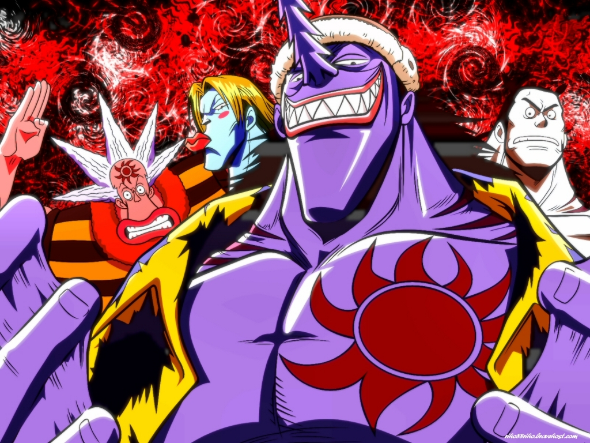

O início de tudo - East Blue
A saga que marca o começo de One Piece tem início nos mostrando como o protagonista Monkey D. Luffy acidentalmente consumiu a a fruta Akuma no Mi e ganhou suas habilidades de borracha ainda criança. Embora a fruta também tenha causado a perda de sua capacidade de nadar, ele não deixou que isso afetasse seu sonho de encontrar o tesouro One Piece e se tornar o Rei dos Piratas. Com o passar dos anos, Luffy aprende a controlar melhor suas habilidades. No decorrer dos episódios, ele vai recrutando sua tripulação, vivendo diferentes aventuras e grandes perigos a cada novo tripulante que tenta convencer a se juntar a sua equipe. Nesta saga, o protagonista enfreta diferentes conflitos. A luta contra um capitão da marinha. O embate com o perigoso pirata Buggy e o temido Capitão Kuro. A conquista do Going Merry (primeiro navio do grupo de Luffy). O momento em que fica frente à frente com o tirânico Arlong. Luffy passou por tudo isso conforme foi reunindo outros aventureiros em sua tripulação, os Piratas do Chapéu de Palha, até aqui formada por Luffy, Roronoa Zoro, Nami, Usopp e Sanji.


Aqui, somos apresentados ao inimigo principal do arco, Arlong. Ele é líder dos homens-peixe, que negociavam com um corrupto capitão da marinha, Nezumi. Nami é bem recebida por Arlong e seus companheiros após sua volta, ela tem o dinheiro que roubou de Luffy para entregar a Arlong. Nesse momento, Zoro descobre que Nami é uma traidora, mas a mesma ajuda ele a fugir depois. Usopp acaba conhecendo Nojiko. Ela conta a ele que Arlong dominou todos os vilarejos da ilha e exige altos impostos mensais para que os habitantes locais continuem vivos. Irritado, Usopp tenta confrontar Arlong mas Nami finge que esfaqueia o companheiro para ele conseguir fugir. Luffy então vai até onde Arlong está e começa a lutar com ele. Zoro, Sanji e Usopp também têm suas lutas separadas com os principais companheiros de Arlong. Principalmente, na luta de Luffy, ele acaba parando no quarto de Nami, onde ela desenhava os mapas para Arlong. Ele acaba destruindo tudo, dando uma ideia de liberdade para Nami, que ela seria livre de Arlong. Assim, Luffy derrota o homem-peixe e Nami aceita definitivamente entrar no bando. Nesse final de arco, Luffy ganha uma recompensa pela marinha.